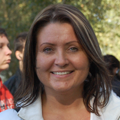
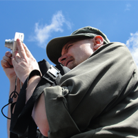

Witaj na stronie poświęconej Szkolnemu Kołu Krajoznawczo – Turystycznemu
SKKT „Elektronik”. Koło działa przy Zespole Szkół Elektryczno – Elektronicznych
w Szczecinie i zrzesza ludzi lubiących aktywnie spędzać wolny czas, a przy tym
poznawać swoje miasto i region. Uczymy się posługiwania mapą i kompasem w nieznanym terenie.
OPIEKUNOWIE

InO, OMTTK

Rajdy i zloty PTTK/PTSM, Leśne Soboty, Konkurs LmiR o Pomorzu.